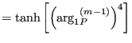
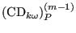
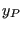
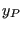

Next: Processing the sensitivity
Up: Sensitivity Analysis
Previous: Sensitivity Analysis
Contents
Figure 174:
Structure of the preprocessing part
 |
Figure 175:
Data structure for all elements belonging to a given node
|  |
The Structure of the preprocessing part is shown in Figure 174. At
first all elements belonging to one and the same node are determined and
stored in the data structure shown in Figure 175. Then, the program
flow is split according to whether the design variables are the coordinates or
the material orientations.
For coordinate design variables the following steps are performed:
- The external faces of the structure are determined and stored in the
data format explained in Figure 164 as well as in the
data format shown in Figure 176 (findextsurface.f)
Figure 176:
Data structure storing the kind of external face and the
nodes belonging to that face
 |
- All external faces to which a given node belongs are stored in fields
iponoelfa and inoelfa according to the data structure shown in Figure
177 (extfacepernode.f)
Figure 177:
Data structure for all external faces belonging to a
given node
 |
- The design variables (i.e. nodes) are stored in ascending order in field
nodedesi(*). The total number of design variables is ndesi (getdesiinfo.f)
- All elements belonging to one and the same design variable are stored in
fields istartdesi and ialdesi according to the structure in Figure
178 (elemperdesi.f)
Figure 178:
Data structure for all elements belonging to a specific
design variable
|  |
- The calculation of the normals to the external surfaces. At the design
variables, this is the direction in which the nodes are moved and for which
the sensitivity is calculated. In each node there can be only one
normal. This is the mean of the normals on all external faces to which the
node belongs. If the EDGE PRESERVATION=YES parameter is activated on the
*FILTER card only external surfaces ``internal'' to the
``domain'' of design variables are taken into account for the calculation of
the normal. An external surface is ``internal'' to the ``domain'' of more
than half of its nodes are design variables (normalsonsurface_se.f).
- The calculation of the normals to the external surfaces. Although it
seems to be the same task as in the previous item, it is not. The normals
calculated here are needed for the mesh modifications in an optimization
procedure. Usually the performance of a sensitivity study is not a goal
itself, rather it is part of an optimization loop during which the
sensitivities, which are nothing else than the derivative of the objective
w.r.t. the design variables, are recalculated in each iteration and used in
optimization strategies such as steepest descent or conjugate gradient. At
the end of each iteration the design variables are moved a small amount in
the normal direction (calculated in the previous item), all other nodes are
not moved in normal direction. This deforms the
mesh and may lead to bad elements. Hence the mesh has to be improved,
e.g. with a Laplace operator. However, the external surface of the structure
should not be changed during this operation. This latter requirement can be taken care of by
defining multiple point constraints based on the local normal(s). Indeed, now more than one normal may be needed, e.g. at sharp
corners which need be preserved. Therefore, the way the normals are
determined here (normalsforequ_se.f) is different from the way this is done
in normalsonsurface_se.f. The equations are stored in file jobname.equ for
further use in a CalculiX input deck.
- Determination of the active nodes, i.e. the nodes belonging to elements
(createinum.f) and storage of the normals determined in
normalsonsurface_se.f in frd-format in jobname.frd (frd_sen.c).
- Determination of the smallest distance between two nodes belonging to
one and the same element. Based on this distance a measure is derived
(actually this distance/10000.) which is used to calculate the
sensitivities on element-to-element basis with finite differences
(smalldist.f).
- randomfieldmain.f
For orientation design variables the following steps are performed:
- Storage of the orientation design variables in the jobname.dat
file. Each local orientation leads to exacty three design variables, which
are the components of the rotation vector describing the orientation
(writedesi.f).
- Determining all elements corresponding to a given orientation. They are
stored in fields ipoorel(*) and iorel(2,*) in exactly the same way as fields
iponoel(*) and inoel(2,*) were used to store all elements to which a given
node belongs, cf. Figure 175 (elemperorien.f).
- All elements belonging to one and the same design variable are stored in
fields istartdesi and ialdesi according to the structure in Figure
178 (elemperdesi.f). This is analogous to the case in which the
coordinates are the design variables.
The next four routines are common to coordinate design variables as well as
orientation design variables:
- First the design variables per element are determined and stored in
fields istartelem(*) and ialelem(*) in exactly the same way as fields
istartdesi(*) and ialdesi(*) were used to store the elements per design
variable according to Figure 178 (desiperelem.f).
- The actual external load is determined (tempload.f)
- The matrix structure of the sensitivity matrix df is determined and stored
using the variables irows(*) and jqs(*). The sensitivity matrix is used to
store
 ,
,
,
,
 or a combination of these. The dimensions are neq x ns, where
neq is the number of independent degrees of freedom and ns is the number of
design variables. This matrix is very sparse, since only the degrees of
freedom belonging to the nodes to which the design variable belongs will be
nonzero. The nonzero's are stored column by column according to ascending
row numbers for each column. Field irows contains the
corresponding row numbers (size = total number of nonzero's), field jqs(i)
contains the location of the first entry in irows beloning to column i.
or a combination of these. The dimensions are neq x ns, where
neq is the number of independent degrees of freedom and ns is the number of
design variables. This matrix is very sparse, since only the degrees of
freedom belonging to the nodes to which the design variable belongs will be
nonzero. The nonzero's are stored column by column according to ascending
row numbers for each column. Field irows contains the
corresponding row numbers (size = total number of nonzero's), field jqs(i)
contains the location of the first entry in irows beloning to column i.
- Each degree of freedom in field df corresponds to a specific direction
in a specific node. In gennactdofinv.f field nactdofinv(i) is determined
yielding the direction and node for a degree of freedom i in the form
(node-1)*mt+direction, where mt is the maximum number of directions (=mi(2),
cf. List of variables and their meaning) + 1.
At this point the preprocessing part is split according to whether the
objectives are the eigenvalues or Green functions, in which case the
eigenvalues, eigenmodes, stiffness matrix and mass matrix are read from file
(generate in a previous *FREQUENCY or *GREEN step),
or whether the objective is the mass, the stress or the shape energy, in which
case the stiffness matrix and the matrix structure are read from file
(generated in a previous *STATIC step).
Next: Processing the sensitivity
Up: Sensitivity Analysis
Previous: Sensitivity Analysis
Contents
guido dhondt
2018-12-15